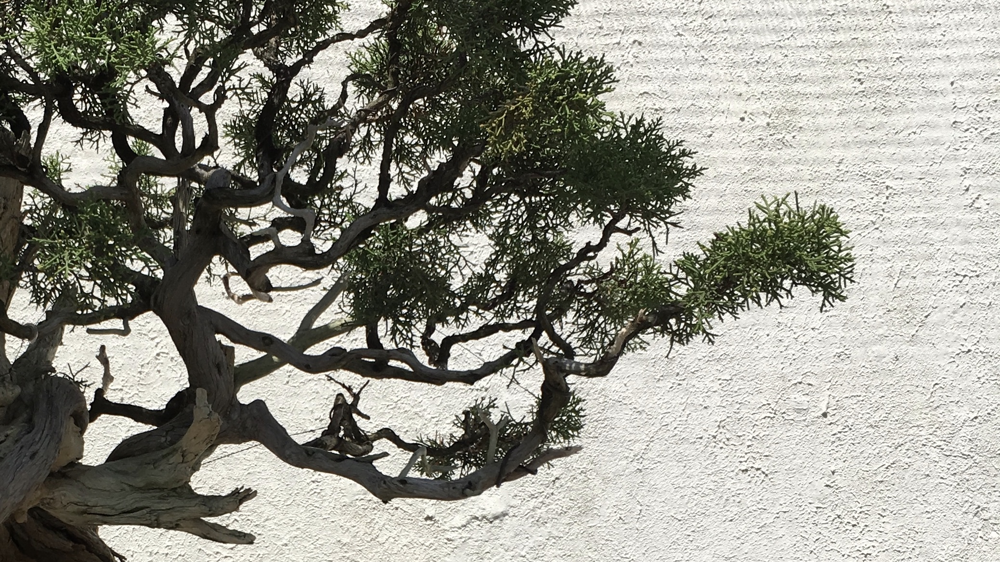
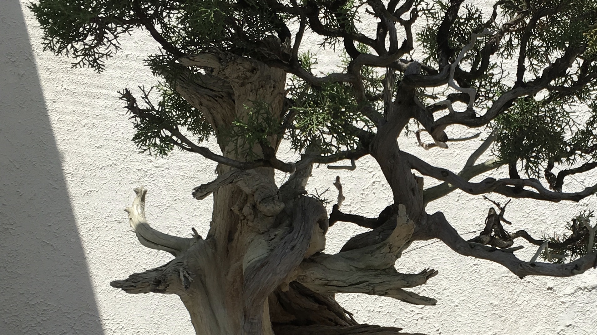
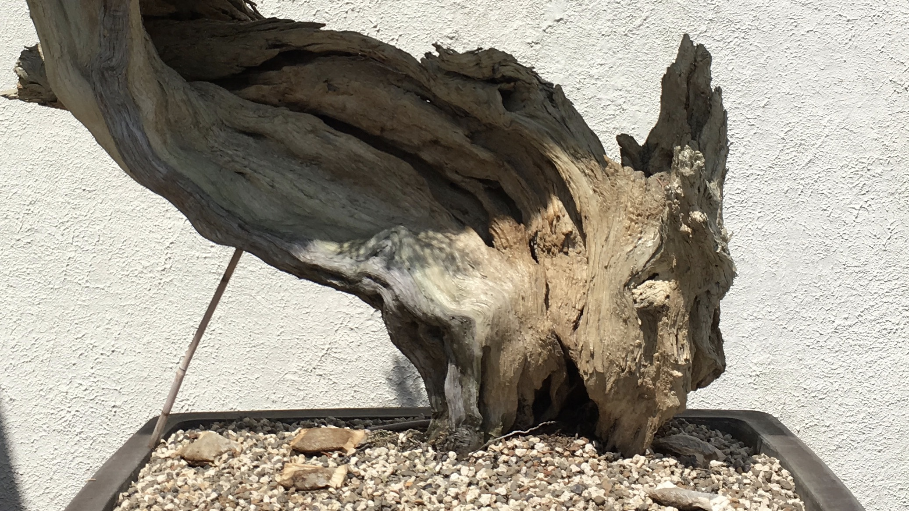

Edakubari
Qualities of the Branches
Growth in multiple directions | Varied branch thickness

Kokejun
Qualities of the Upper Trunk
Graceful tapering of the trunk | Proportions of a full-size tree

Tachiagari
Qualities of the Lower Trunk
Firmly-attached roots | Eight points of balance | Layered, aged bark
Text from Bonsai by the Art Research Center, Ritsumeikan University in collaboration with Kyoto University